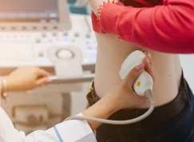

Подготовка к УЗИ почек
Для получения наиболее точных и информативных результатов мочевой пузырь обследуемого должен быть наполнен, а кишечник – освобожден от каловых масс и газов. Это требование обусловлено свойством ультразвука свободно проникать сквозь жидкостные среды и отражаться от пустот (мест скопления газов и воздуха).

- В течение 3 суток до УЗИ почек необходимо соблюдать диету, ограничивающую продукты, которые повышают газообразование в кишечнике: молоко и сливки, черный хлеб, бобовые, овощи и сладкие фрукты, газированные напитки, дрожжевые хлебобулочные изделия и др.;
- Ужин накануне процедуры должен быть легким и не позднее 19.00;
- При проблемах с кишечником (упорные запоры, вздутие) перед УЗИ почек нужно сделать очистительную клизму или принять слабительное накануне вечером и утром, непосредственно, в день обследования;
